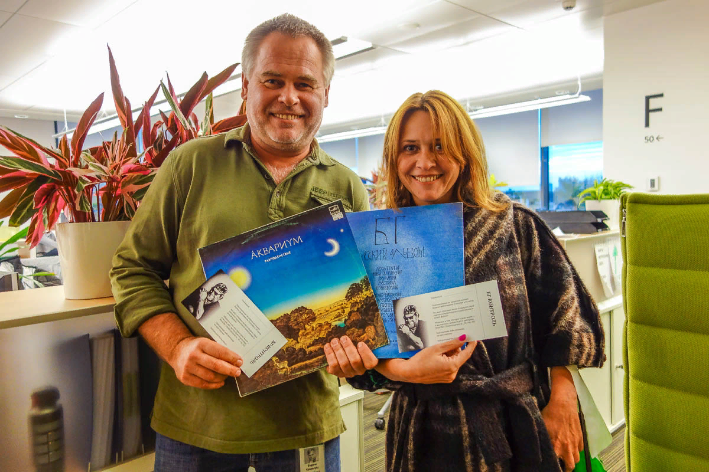

Семья и увлечения
Семья
Женат третьим браком, имеет пятерых детей. От первого брака с Натальей Касперской (развёлся в 1998 году) у Евгения два сына: старший Максим (род. 1989) учился на географическом факультете МГУ, работает в маркетинге, младший Иван (род. 1991) учился на ВМК МГУ. 19 апреля 2011 года младший сын Иван был похищен у станции метро «Строгино» и через пять дней освобождён в результате совместной спецоперации Московского уголовного розыска с оперативниками ФСБ при поддержке бойцов ОМСН в районе Сергиева Посада. Преступники, требовавшие выкуп в 3 млн €, были задержаны. Летом 2012 года суд приговорил одного из них, А. Устимчука, к 4,5 годам лишения свободы. Бывшая жена, соучредитель и акционер компании — Наталья Касперская. Бывшие супруги долгое время продолжали успешно сотрудничать в бизнесе. В 2012 году стало известно, что антивирусная компания «Лаборатория Касперского» и компания Infowatch, которую возглавила Наталья Касперская, решили стать полностью независимыми бизнесами. Евгений со своей второй женой и Наталья со своим новым мужем иногда отдыхали вместе, катаясь на горных лыжах. С 2009 года в третьем браке, жена — китаянка, трое детей, старший в 2016 году начал учиться в школе.
Увлечения
Касперский увлекается гонками Формулы-1, которые регулярно посещает, и сотрудничает с командой Ferrari. В силу специфики своей работы Евгений большую часть года проводит в командировках. Он ведёт блог, в котором регулярно рассказывает о проблемах IT-безопасности, а также об интересных местах, в которых ему довелось побывать. Одно из любимых — Камчатка, где он отдыхал уже несколько раз. По данным агентства Bloomberg, Касперский иногда ходит в баню со знакомыми, среди которых бывают сотрудники российских спецслужб. Не отрицая данного факта, программист пояснил, что в вопросах борьбы с киберпреступностью его компания сотрудничает со многими спецслужбами разных стран, и иногда общение продолжается в неформальной обстановке. Евгений живёт в Москве. Любит горнолыжный спорт, благодаря которому и познакомился со второй женой, часто бывает на горнолыжных курортах Италии и Австрии. Увлекается походами на байдарках и альпинизмом. Охотно фотографирует и часами демонстрирует снимки знакомым. Снимался в рекламном ролике своего антивируса вместе с Джеки Чаном.